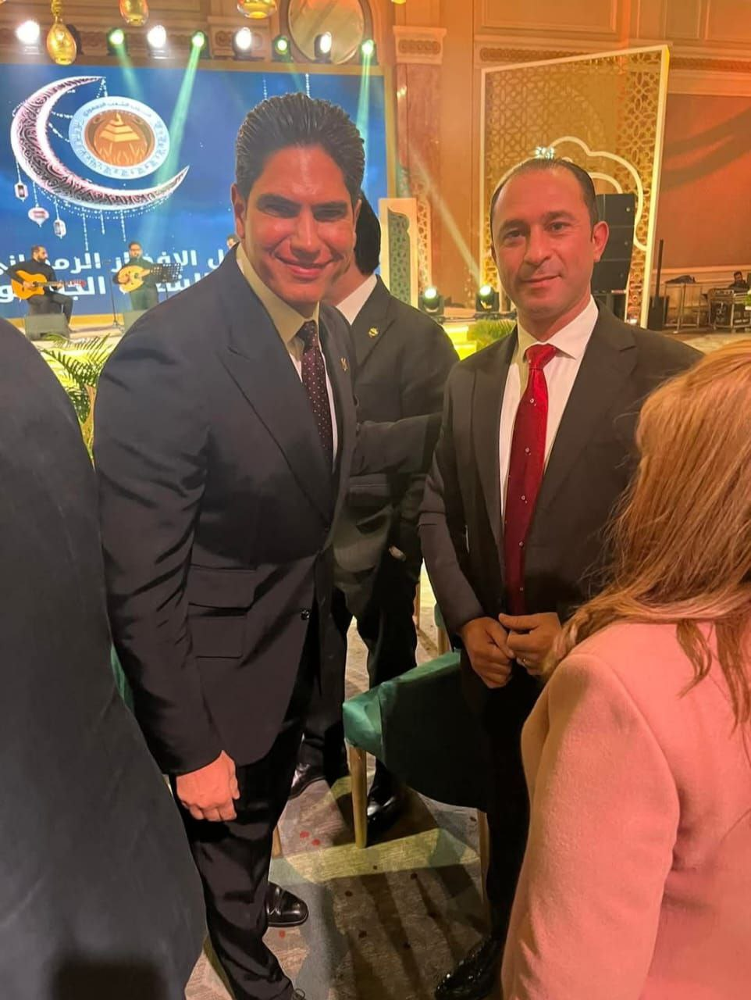
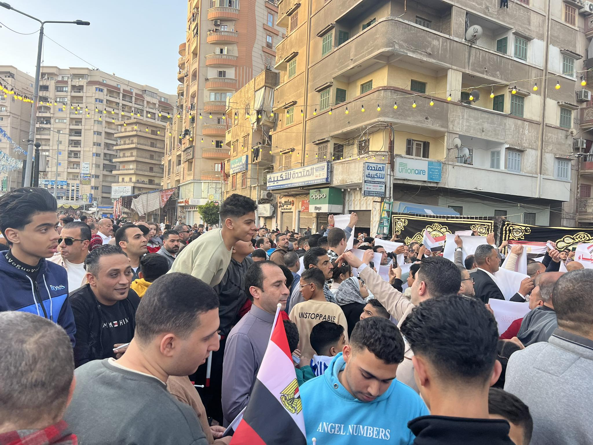

مسيرة حافلة بالإنجازات في العمل السياسي والاقتصادي، ودور بارز في التنمية المجتمعية والعمل الجماهيري.
هشام موسى هو رجل أعمال قيادي له تأثير كبير في العديد من المجالات الاقتصادية. بدأ مسيرته المهنية من خلال تأسيس شركة آل موسى للاستثمار والتنمية العقارية والمقاولات العامة، حيث قدم العديد من المشروعات العقارية الناجحة التي ساهمت في تعزيز الاقتصاد المحلي.
من خلال خبرته في إدارة المشروعات الكبيرة، استطاع هشام موسى تحقيق نمو كبير في مجال الاستثمار العقاري، بالإضافة إلى تعزيز مكانته في السوق المحلي والدولي.
هشام موسى يشغل حالياً منصب الأمين المساعد للعمل الجماهيري في الحملة الوطنية بالمركزية، حيث يشارك في العديد من الأنشطة السياسية التي تهدف إلى تحسين الأوضاع المجتمعية وتعزيز التواصل بين المواطنين والمسؤولين.
كما يشغل منصب الأمين المساعد لشئون العضوية في حزب الشعب الجمهوري، ويسعى من خلاله إلى توسيع قاعدة الحزب وتعزيز دوره السياسي في المرحلة المقبلة.
بجانب ذلك، يخطط هشام موسى للترشح لانتخابات مجلس الشعب القادمة، حيث يسعى من خلال ترشحه إلى تمثيل المواطنين بشكل فعال وتحقيق تغييرات إيجابية في التشريعات التي تساهم في تحسين حياة المواطنين، وتعزيز الاستثمارات التي تساهم في توفير فرص العمل.
يتطلع هشام موسى إلى التوسع في مشروعاته العقارية المستقبلية وتطوير مشروعات مبتكرة تساهم في تحسين الاقتصاد المحلي وزيادة فرص العمل. كما يهدف إلى تعزيز التفاعل بين القطاع الخاص والحكومة لتحقيق تنمية مستدامة.
من ضمن خططه المستقبلية، يركز هشام موسى على تطوير مدن جديدة ومتطورة تكون قادرة على استيعاب الزيادة السكانية، مع توفير بنية تحتية حديثة تلبي احتياجات الأجيال القادمة.
أما في المجال السياسي، فهو يعتزم استخدام منصبه في مجلس الشعب القادم للتركيز على القضايا الاجتماعية والتنموية، والضغط من أجل تشريعات تدعم الاستثمارات في مجالات متنوعة، بما يساهم في تحسين مستوى الحياة في مصر.
يهدف هشام موسى إلى تطوير المدن الجديدة من خلال دمج التكنولوجيا الحديثة في البنية التحتية، مع إنشاء مناطق سكنية وتجارية توفر بيئة حياة متكاملة ومريحة. كما يخطط لتحسين شبكة المواصلات داخل المدن لتسهيل التنقل وتحسين جودة الحياة.
كما أن لديه رؤية واضحة لتحسين قطاع السياحة في مصر من خلال تطوير مشروعات سياحية تستهدف الأسواق الدولية، مما يساعد على جذب الاستثمارات الأجنبية وتعزيز الاقتصاد الوطني.
في الجانب السياسي، يسعى هشام موسى إلى التأثير بشكل إيجابي على مشاريع تطوير المدن عبر سن تشريعات تدعم البنية التحتية المستدامة، والاهتمام بالتحسين المستمر للخدمات الحكومية وتوفير فرص العمل من خلال مشروعات جديدة.